Rower Rent CRM: от Google Таблиц к продукту, которым пользуются
Сеть проката велосипедов вела всю работу в Google Таблицах, а от готовых CRM команда уже однажды отказалась из-за сложности. Я была единственным дизайнером в проекте и спроектировала CRM, которая сохраняет привычную логику таблиц и убирает из неё ручной труд.
Rower Rent — сеть проката велосипедов: 5 городов, 5 филиалов, 15 менеджеров. Все процессы велись в Google Таблицах и Google Формах.
Владелец бизнеса уже пробовал подключить готовые CRM для аренды, но команда не смогла на них перейти из-за сложности интерфейсов. Таблицы работали и росли вместе с бизнесом, но вместе с ним росли и проблемы: ошибки при оформлении, ручной учёт инвентаря, руководитель вручную собирал данные по филиалам.
Менеджеры филиалов
Обслуживают велосипеды в ремонтном отделе и работают с клиентами. Данные заполняют на ходу, часто с отвёрткой в руке, пока клиент стоит рядом и ждёт.
Руководитель
Сводит данные по филиалам, которые раньше собирал вручную из разных таблиц.
Клиенты проката
Заполняют свои данные с планшета, менеджер продолжает оформление с компьютера.
02
Задача, ограничения и роль
Задача
Спроектировать CRM для клиентов, контрактов, инвентаря и бронирований, которая не сложнее Google Таблиц. Иначе команда вернулась бы обратно к таблицам.
Ограничения
Команда уже бросила готовые CRM из-за сложности
Один интерфейс для всех устройств, без отдельного адаптива
Работа в спешке, иногда в перчатках
Автоматизация бронирований не должна была задеть работающую воронку продаж
Моя роль
Единственный дизайнер: интервью, user flow, CJM, вайрфреймы и прототипы, дизайн-система и UI. Решения обсуждала с владельцем и разработкой, прототип проверяла вместе с владельцем и менеджерами.
03
Исследование и исходные данные
Интервью с владельцем
Разобрали, как устроены процессы в филиалах и почему не прижились готовые CRM.
Разбор рабочих сценариев
Как менеджеры оформляют контракты и ведут учёт на практике. Отдельного наблюдения за работой в филиалах на старте не было, об этом в выводах.
Валидация прототипа
Кликабельный прототип проверили с владельцем и 2 менеджерами до разработки.
Данные после запуска
После релиза пришли данные об ошибках при выборе способа оплаты. С них начался второй релиз.
Что выяснилось
Каждая лишняя секунда заметна
Менеджер оформляет контракт, пока клиент ждёт рядом. Задержка в интерфейсе превращается в неловкость и потерю времени.
Сложность уже стоила проекта
Команда отказалась от готовых CRM. Новый интерфейс не мог быть сложнее таблиц, даже если он «правильнее».
Теги в таблицах не работают
Менеджеры каждый раз писали теги по-своему, поэтому найти и проанализировать инвентарь было невозможно.
Бронирование и контракт не определены
Как связаны две сущности, никто чётко не формулировал. Это пришлось расписать отдельно.
04
Процесс и ключевые решения
Решение 1 · Релиз 1
Интерфейс, который не сложнее Google Таблиц
Проблема
Если новый интерфейс покажется сложнее старого, команда вернётся к таблицам. Прецедент уже был.
Решение
Не придумывать новую логику, а перенести привычную, убрав из неё ручной труд. Бесшовный переход, а не революция.
user flow для всех ключевых сценариев, CJM для менеджера и руководителя
вайрфреймы и low-fidelity прототипы с фокусом на консистентность
UI на фирменном стиле сайта для визуальной преемственности
дизайн-система с компонентами и всеми состояниями на автолэйаутах
нейтральные цвета и крупные элементы для работы в перчатках
Почему так
Один интерфейс для всех устройств: клиент заполняет данные с планшета, менеджер продолжает с компьютера. Это ограничение задало форму решения.
Итог
Время оформления контракта сократилось на 58%, за 6 месяцев через систему оформили 2000+ контрактов.
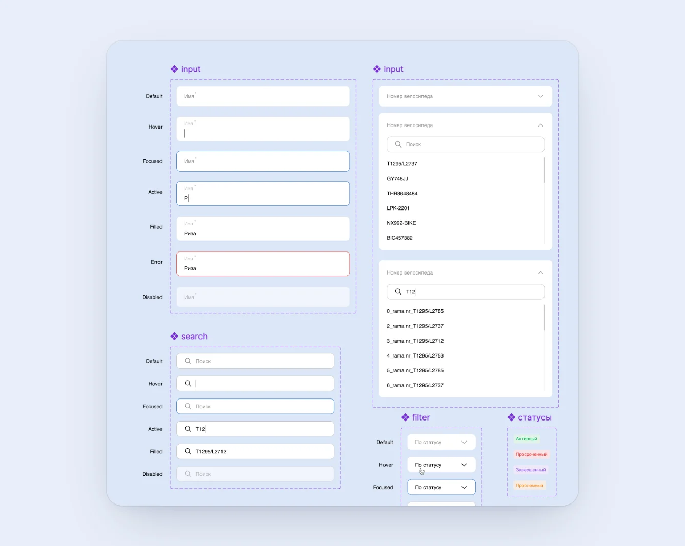
UI-кит: поля ввода во всех состояниях, дропдаун с поиском по номеру велосипеда
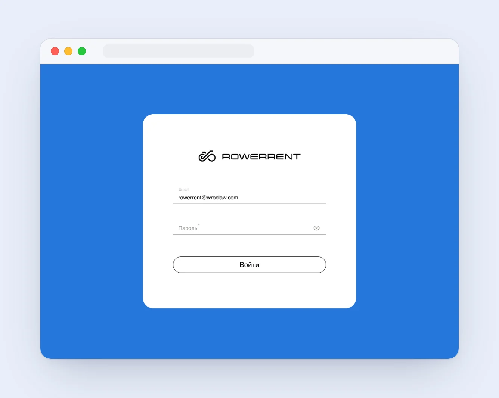
Экран входа в CRM в фирменном стиле сайта
Решение 2 · Релиз 2
Ошибку показали данные, а не макет
Проблема
После запуска выяснилось, что менеджеры путают способ оплаты в дропдауне. Транзакции отменялись, время терялось. В текстовом списке при быстрой работе легко промахнуться.
Решение
Цветовое кодирование и иконка для каждого способа оплаты. У каждого пункта появился свой визуальный якорь.
Почему так
Цвет и форма считываются периферийным зрением, без необходимости вчитываться в текст. Флоу при этом не перестраивали, он уже работал.
Итог
Ошибки при выборе способа оплаты снизились до нуля.
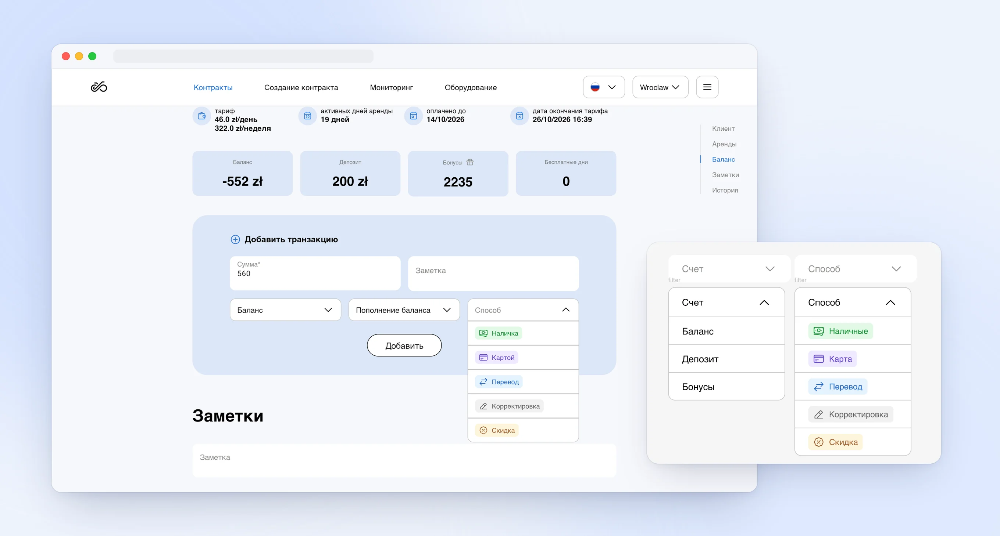
Способ оплаты с цветом и иконкой: в форме новой транзакции и в фильтрах
Решение 3 · Релиз 3
Инвентарь, который можно найти и сравнить
Проблема
Инвентарь вёлся в отдельной таблице без фильтров. Теги писали произвольно, поэтому проанализировать данные было невозможно.
Решение
единая страница для двух сущностей, велосипедов и батарей, с переключением табом
одно модальное окно создания с переключателем типа: один флоу с разветвлением вместо двух
цветные теги типа аренды и статусов из фиксированного словаря
Почему так
Фиксированный словарь убирает разночтения, а общий флоу не заставляет запоминать два разных способа создать запись.
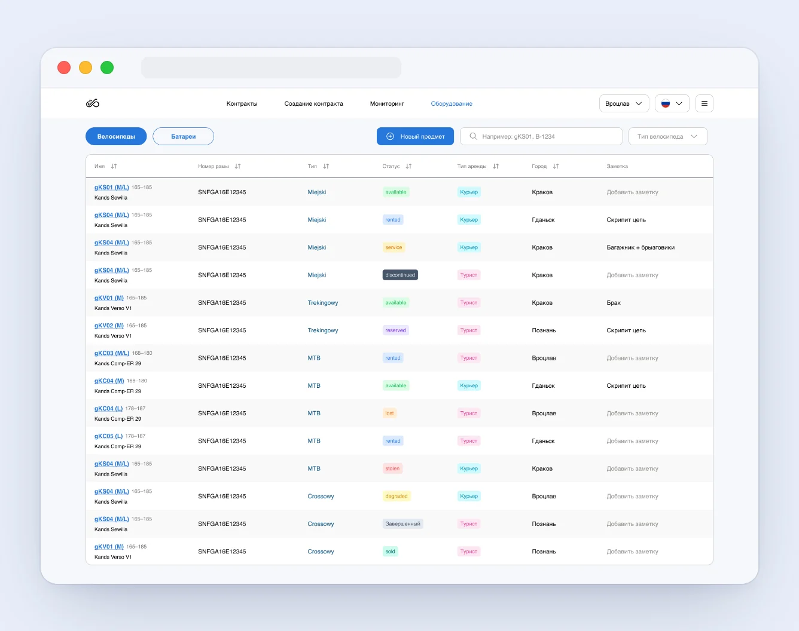
Таблица оборудования: статусы и тип аренды из фиксированного словаря
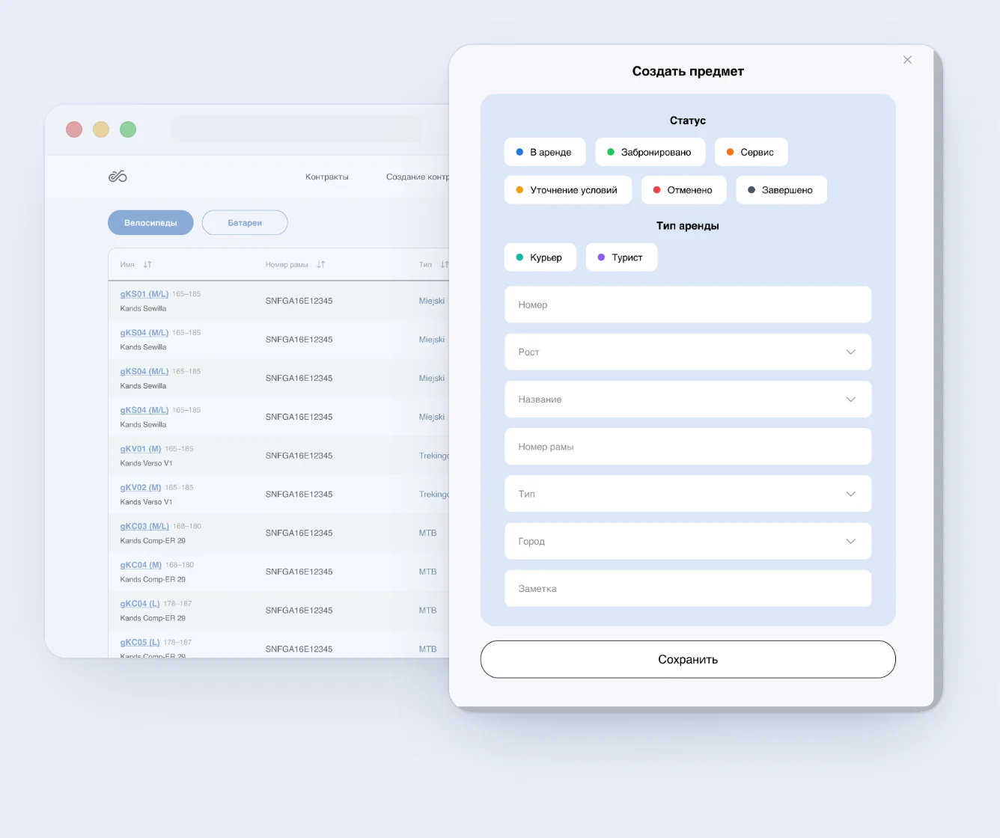
Единое окно создания предмета: статус и тип аренды выбираются, а не пишутся вручную
Решение 4 · Релиз 3
Бронирования: самый нагруженный экран остался простым
Проблема
Много информации и состояний на одном экране. Бизнес хотел быстрый вход и высокую контрастность, а в интерфейсе 4 возможных фона: цвета статусов, хорошие на одном, сливались на другом.
Решение
Паттерн диаграммы Ганта: каждый велосипед строка, время ось. Сразу видно, кто свободен, кто занят и когда освобождается.
Цвета подбирала в 4 итерации, каждую проверяла на всех фонах. Финальную палитру прогнала через аудит контраста по WCAG.
Почему так
Аудит не требовался, но то, что хорошо выглядит на моём мониторе, может исчезнуть на мониторе менеджера в филиале.
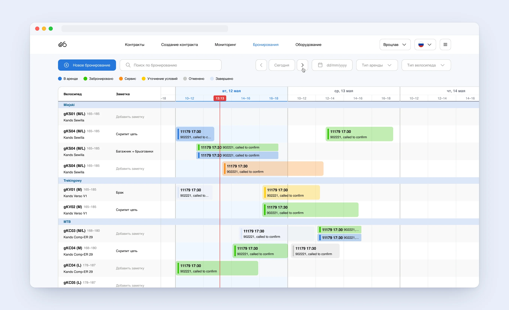
Экран бронирований: каждый велосипед строка, время ось, статус виден по цвету плашки
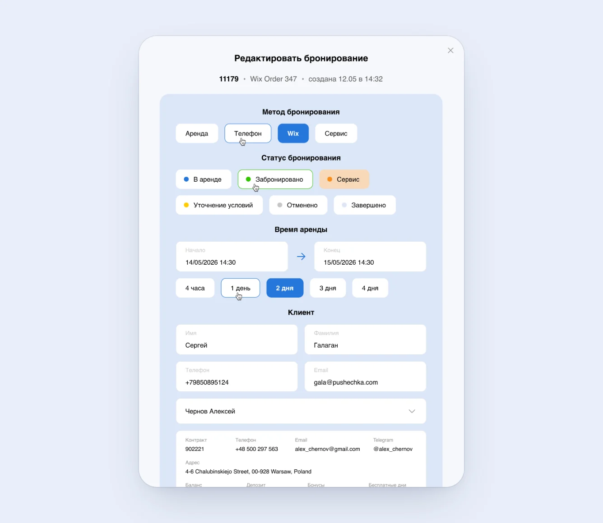
Поп-ап просмотра и редактирования бронирования
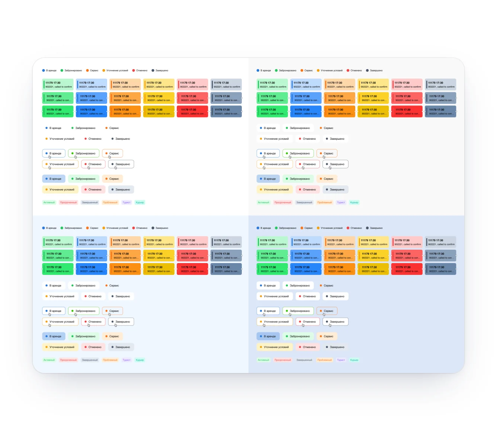
Проверка статусов на четырёх фонах интерфейса: плашки, фильтры, чипы и теги
Решение 5 · Релиз 3
Связь бронирования и контракта с учётом ограничения бизнеса
Проблема
Как связаны бронирование и контракт, чётко не было определено. Я расписала все флоу вручную: новый и существующий клиент, через сайт и через офис.
Решение
Предложила автоматизацию: если телефон уже есть в базе, данные подтягиваются сами. На созвоне с владельцем решили автоматизацию с сайта не делать, она могла сломать работающую воронку продаж.
Итоговая связь через ручной переход:
из активного бронирования кнопка «Перейти в контракт»
если телефон есть в базе, данные подтягиваются и появляется кнопка перехода
для нового клиента кнопка «Создать контракт» активируется, когда он пришёл в офис с паспортом
Почему так
Это ограничение бизнеса, а не дизайна. Решение спроектировано с его учётом, а не в обход.
Итог
Интерфейс собран и передан в разработку.
05
Финальное решение
CRM покрывает весь путь аренды: от входа менеджера и оформления контракта до учёта оборудования, денег и страницы, которую клиент открывает со своего телефона.
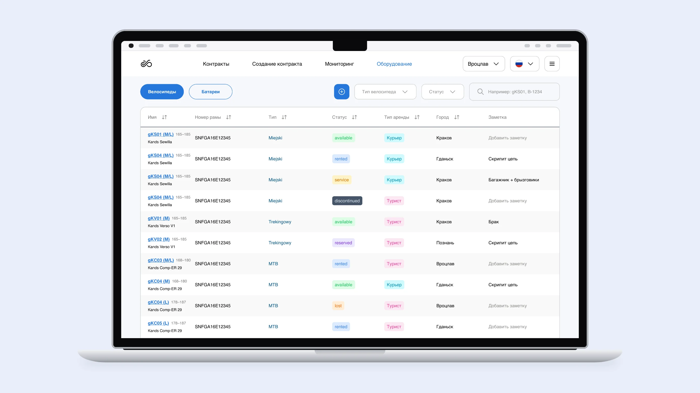
Оборудование: велосипеды и батареи в одной таблице, статусы и тип аренды цветными тегами
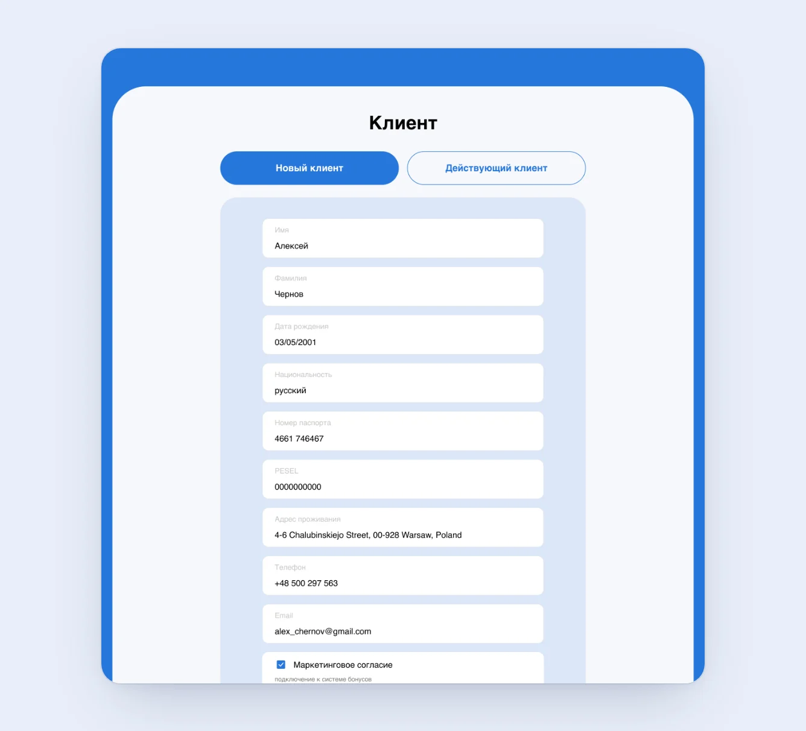
Создание контракта: инвентарь, аксессуары и итоговая сумма считаются на одном экране
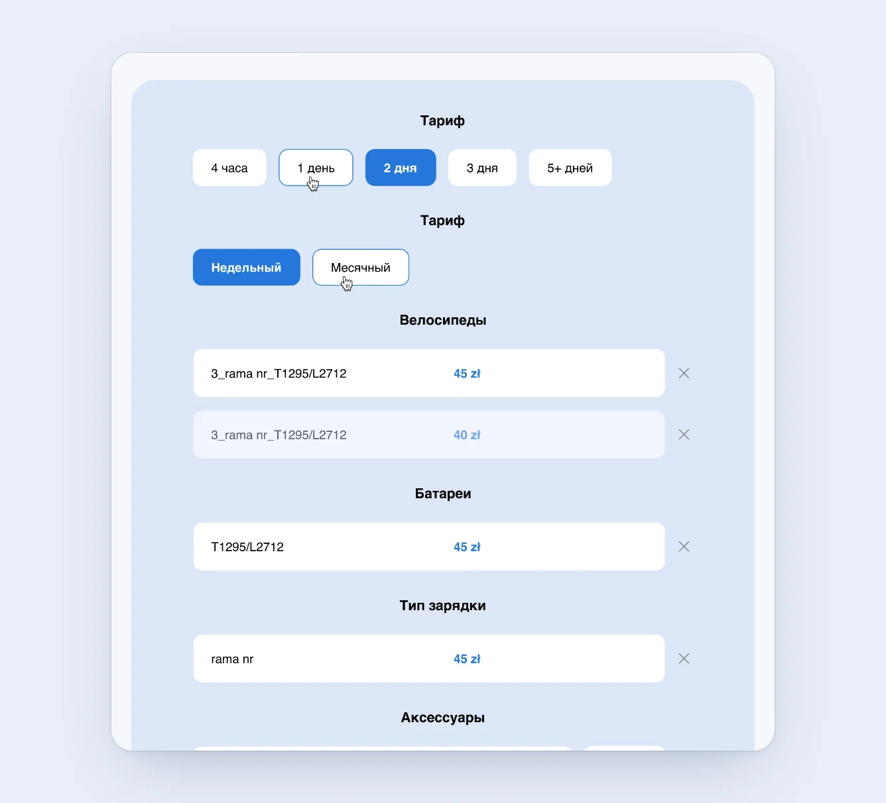
Карточка контракта: тариф, арендованный инвентарь и баланс
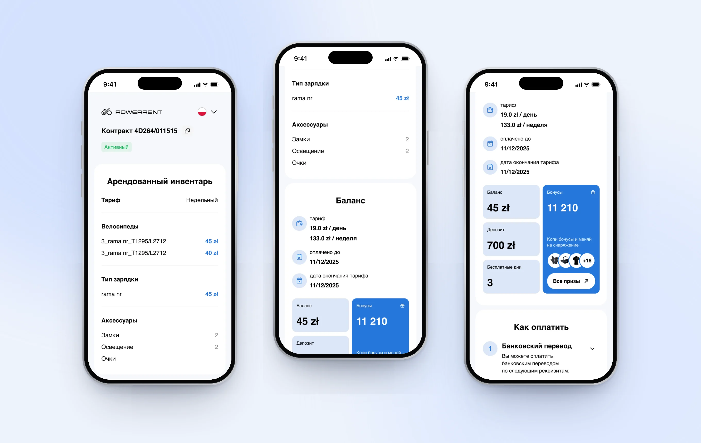
Страница клиента на телефоне: инвентарь, баланс, бонусы и способы оплаты
06
Результат
Измерено
−58% времени оформления контракта
2000+ контрактов через CRM за первые 6 месяцев
−60% ошибок при оформлении
Обратная связь и итог
Ошибки при выборе способа оплаты снизились до нуля после второго релиза
Команда перешла на CRM без сопротивления, хотя от готовых систем раньше отказалась
Страница бронирований собрана и передана в разработку
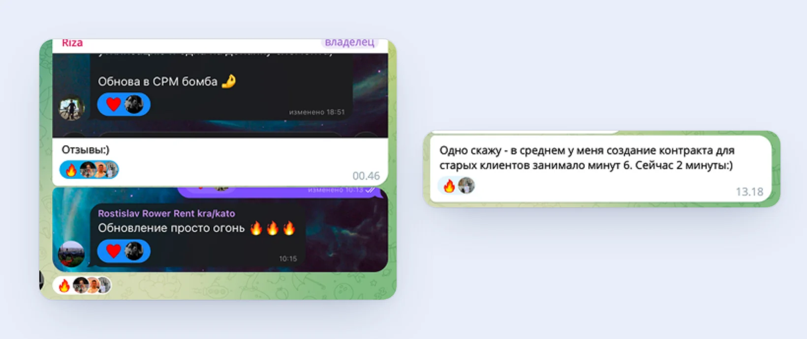
Отзывы владельца и менеджеров в рабочем чате после релизов
07
Выводы
Проект подтвердил главное: конечный пользователь важнее красивой архитектуры. Можно спроектировать «правильно» и получить интерфейс, которым не пользуются. Так уже было с готовыми CRM, которые команда забросила.
Я намеренно выбирала бесшовный переход: сохранить привычную логику Google Таблиц и убрать только то, что мешало. Это сложнее, чем придумать с нуля, зато команда перешла без сопротивления.
Что сделала бы иначе. Раньше настояла бы на наблюдении за реальной работой менеджеров, а не только на интервью с владельцем. Часть решений второго релиза могла появиться уже в первом.
Хотите обсудить этот кейс подробнее?
Расскажу подробнее о решениях, которые не вошли в описание.